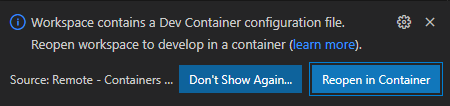

Project setup¶
This page will describe how to setup the development environment for developing on the CosmOS referecence project. The guide will focus on installing the evironment on a windows system but since we are using docker containers and VSCode it should work on most operating systems.
Prerequisites¶
Windows with at least WSL2 installed or just linux will work too.
First time code checkout¶
- Clone the dev environment repository by either downloading the zip from github or using this git command:
git clone https://github.com/CosmOS-Creators/dev_environment.git
Open the VSCode workspace.
Install the recommended VSCode plugins.
- You now have two choices:
- Run with GUI support:
If you want to also run any graphical applications (like CustomBox) from the docker container make sure that you have WSLg installed if you are on windows.
Open the file
.devcontainer/dev_container_GUI.yamlIf you are on windows make sure that under volumes the path on the left of the
:symbol matches your particualr installed WSL distro. The default one is set toUbuntu-20.04If you are on linux you should be able to just mount it to the same location as it is mounted to inside the container.
- Run without GUI support:
Open the file
.devcontainer/devcontainer.jsonand make sure that the propertydockerComposeFileis set to use thedev_container.yamlfile
- VSCode should ask you now if you would like to repoen the workspace in a new docker container. Select reopen in container:
- 
- After VSCode reopens open a new terminal window and run the following command:
git clone https://github.com/CosmOS-Creators/reference_project_stmIDE.git . --recurse-submodules
Now you might need to select workspace folder location inside the doecker container in VSCode or you can also just close and repoen VSCode in order for it to to it for you.
Compiling the source code¶
Some default build commands have been setup ready to use ion VSCode. You just need to press Ctrl+Shift+B to call the default build task.